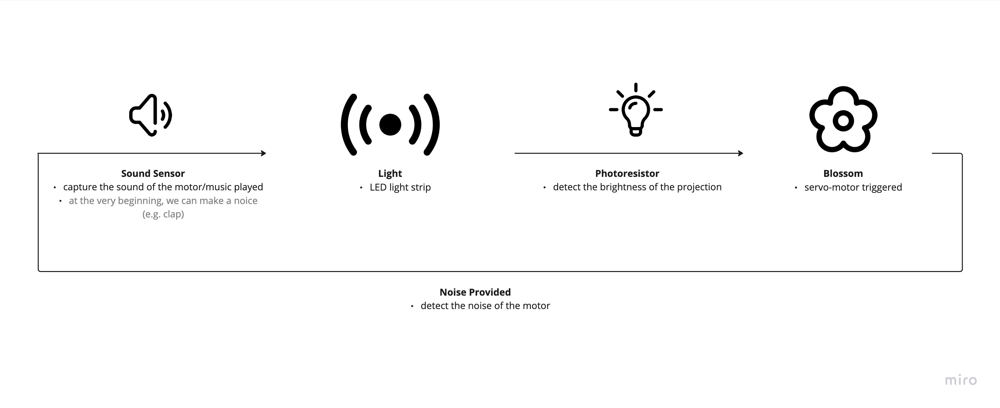
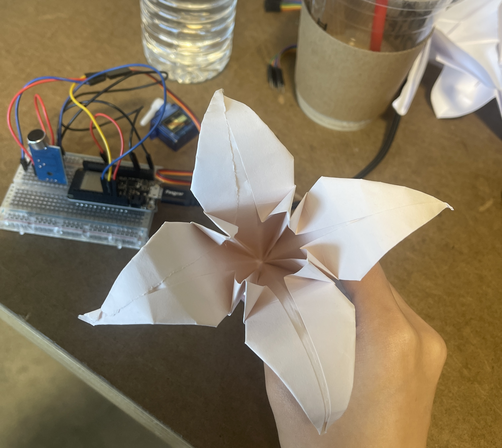
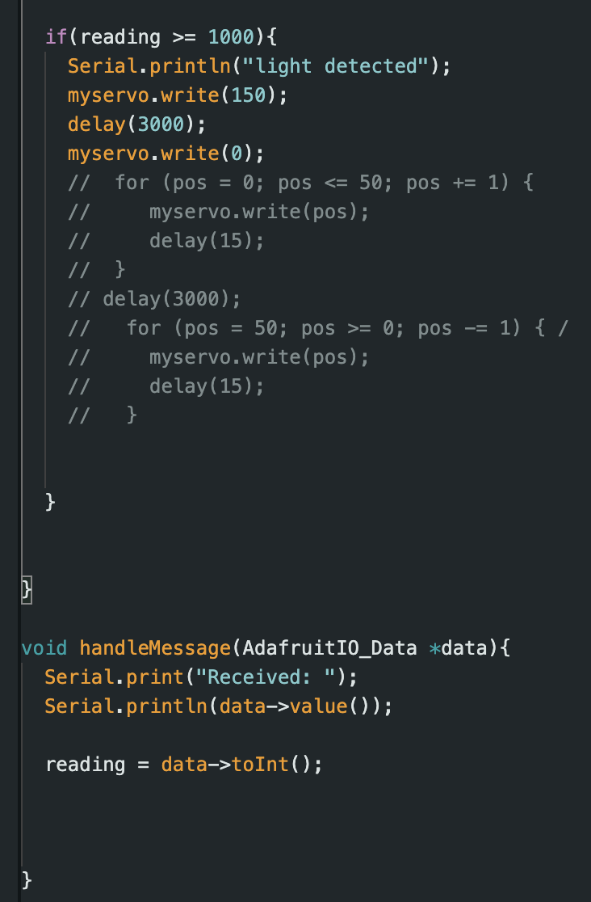
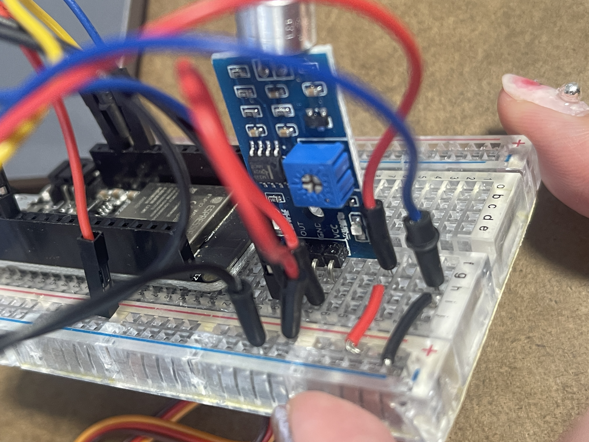
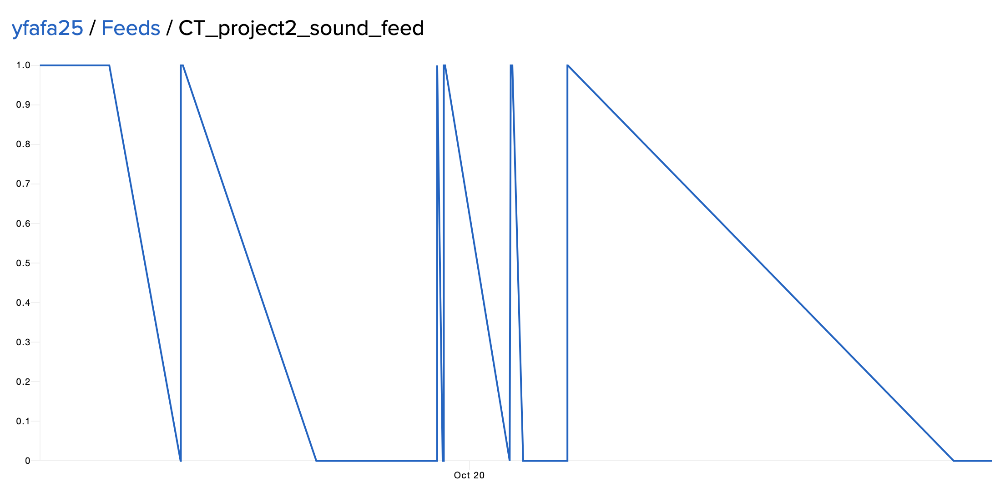
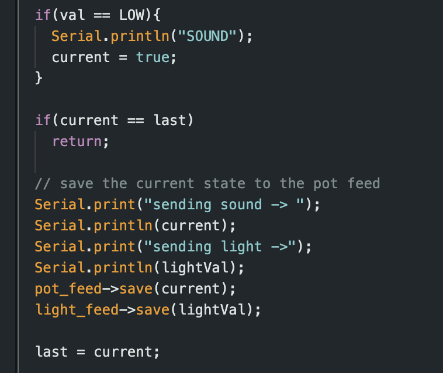
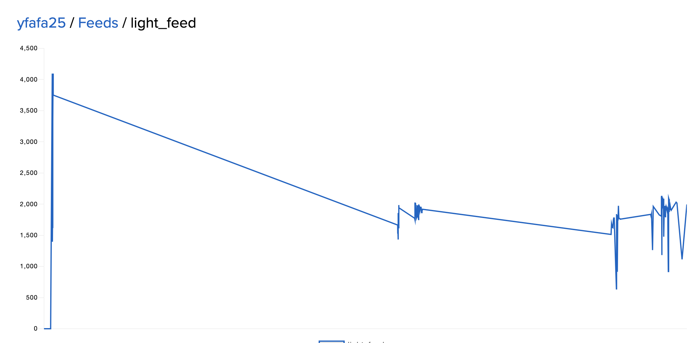
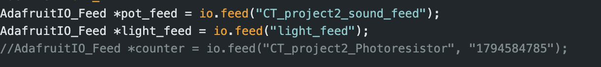

1. Concept & Diagram 
The synthetic relationship in the nature world brought inspiration in terms of the intersecting communication: flowers blossom when facing enough sunlight, leading to a harmonious environment, which can furtherly create a proper atmosphere for the better growth of the plants
Therefore, I marked the 'flower' and the 'light' as two key embodier to show the visualize the data interaction. They were also going to send data out to each other. Relatively, the brightness of the light would be detected by a photoresistor. And for the flower, I decided to use a servo motor attached to a origami flower so that the flower will blossom as it is dragged by the motor. The sound made by the motor would be captured by a sound sensor, which will furtherly trigger the light.
2. Development#1servo motor & flower movement
I started from connecting the servo motor with the origami flower. At first, I used a metal wire to stick the motor and the petal together. But the wire was too strong and hard which pulled the petal out and could berely come back.
Then I changed the wire with a soft wire, which turned out to be too soft to make any changes. After some experiments, I decided to combine the metal wire with the soft one, so that the wire can be bent and to have some margin for small adjustments, while also have some supporting force to hold and drag the petal
The motor would be triggered if the brightness of the environment reached to a certain point.
At first, I added the if statement triggering the motor directly in the handleMessage() function, which cause a huge delay. I then found out that I can make the code more efficient by simply adding a variable to store and call the data that would be passed:
 3. Development#2sound sensor
I used a microphone sound sensor to capture the sound made by the motor, and to further trigger the LEDs. Since the sound made by the motor is subtle, I adjust a bit of the threshold of the sensor with its knob on the back.
One important insight was that the data of the sound sensor is digital, which means only 1 and 0 can be output. However, due to the limitation of the IO and the efficiency requirements, the sound tracking might not be record and sent every settled time.
After turning to TAs and the Arduino examples of the digital_in, I added a boolean so that the data would be sent everytime the sound is detected:
 4. **Development#4**photoresistor
This part, as arranged, should be covered by my partner. However, since it is so tightly connected with the motor movement that I have created, I decided to create another feed on my IO to hold the data from the photoresistor
  5. Conclusion & ReflectionThe topic of a symbiotic relationship is intriguing. The interactive relationship of "It is pitying me, while I am feeding it" came to my mind when seeing the prompt. Therefore, how to circulate the diagram and to make the process loop and connect with each other became a tough decision. Therefore, I believe that plants and nature can explain this complex correlation well in the form of expression.
Also, I do believe that the communication and the cooperation among people who spending effort to build the synthetic relationship is an essential part in this project. The process of sending and downloading data is also a representation of how the interactive relationship should be made.